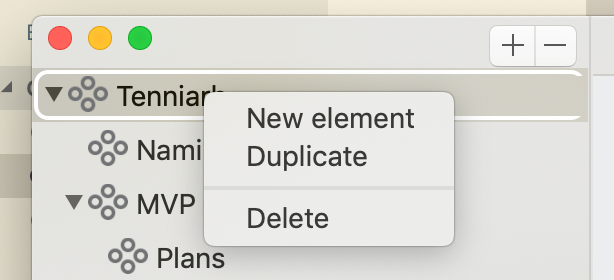
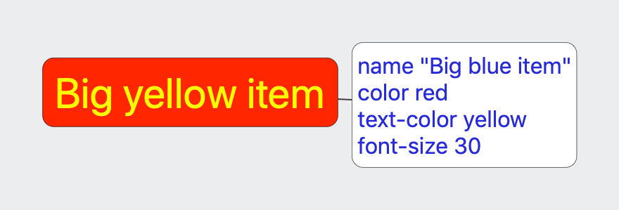
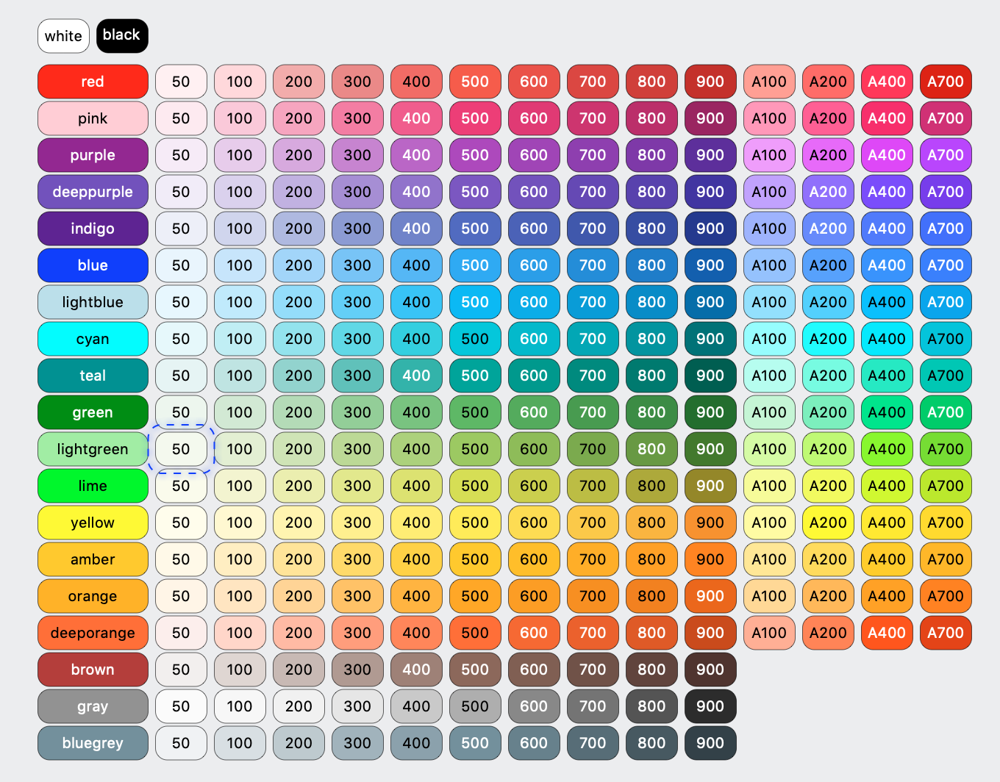
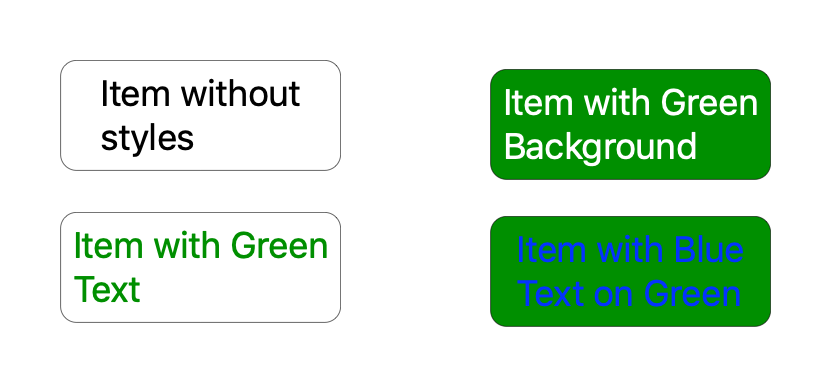
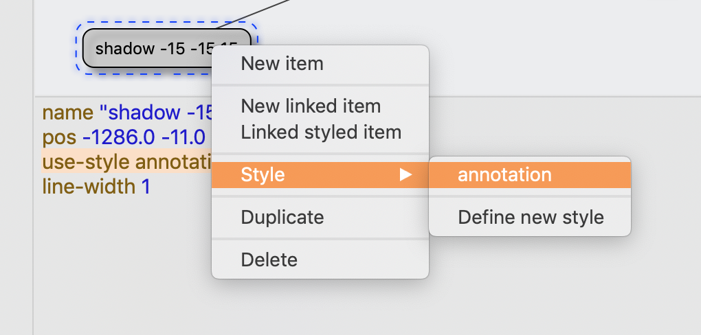
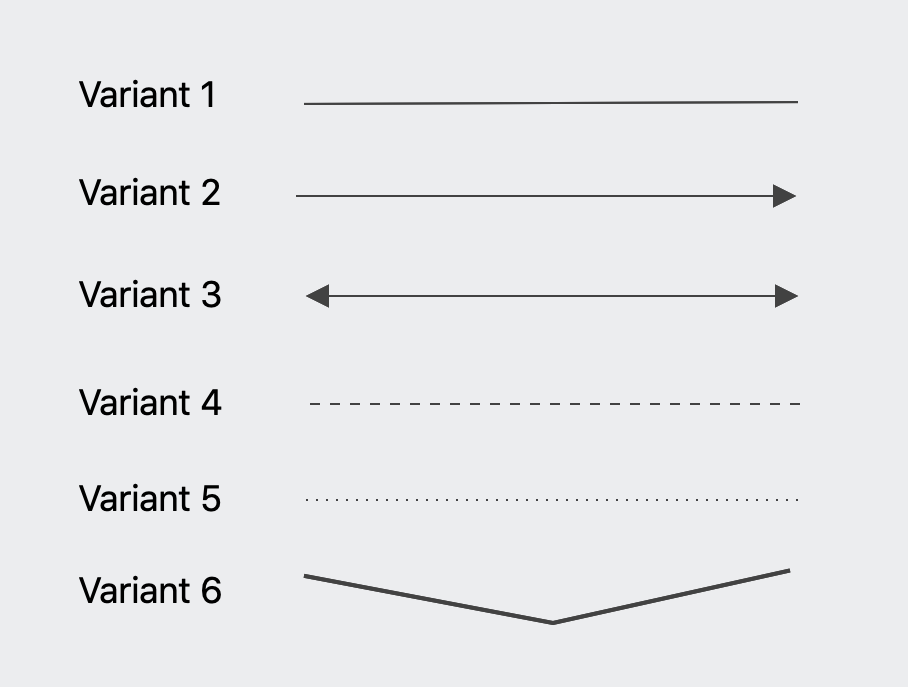
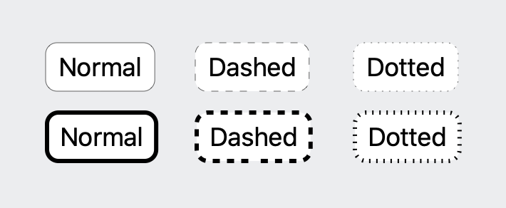

Tenniarb - General information
Tenniarb is a diagram/modelling tool, capable of doing simple and complex diagraming, easy organize them into categories. Easy create and style them, and as benetit it has a powerfull JavaScript calculation engine embedded, so styling and diagraming become a real powerfull solution for any kind of fast modelling and prototyping.
Every item on diagram is an object with set of properties, some properties have influence on how item is displayed on diagram. Some properties are user defined data, properties could depend on calculations and other items and properties.
In general every item on diagram could be treated as a cell in electronic table, but it allow not just one formula to be used but to define any set of formal and properties to be used.
First steps
Tenniarb is multi window application, every window manage it own file on file system. Every file has plain text structure.
Simple diagram content will look like:
xxxxxxxxxxelement "Simple" {item "Central" {font-size 30marker "üéÅ"}}
Where element is describing a logic structure of diagram layers embedded one into another and item show individual items on diagram. Syntax is pretty easy to read and write by hands, it will be described in details in Syntax Section of this document. Language used to manage content of all element, items inside file are named Tenn. It was based on well known and old Tool Command Language(TCL) and have a clean and easy to use syntax.
Main screen
Main window:
Main window has following structural components:
Document logical structure:
It allows to organise diagrams, and perform logical structure with basic operations of drag & drop, duplication and naming.
Diagram with items. Support ordering items with links, styles for visual representation of ideas, structures and any kind of information required.
Properties pane.
A textual representation of selected diagram, item with properties managed by Tenn language.
Creating and managing elements.
There is few ways to create elements.

- Using (+), (-) buttons on top of logical structure, will add child item to selected top level item or delete child item. All this operations are support undo & redo.
- Drag & Drop - could be used to put items in right position and order.
- Duplicate - could be used for duplicate selected layer of diageam for perform some changes and see differences.
Creating and managing items on diagram layer.
Item is a key point element of any diagram, it represent structure point of interest, it could contain any set of properties, properties could be groupped and represent a tree structured document. Main property of every item its his name. But name is not uniq representation so it could be multiple items with same name.
Item positioned on diagram using pos x y property.
On every selected layer items could be managed using items main panel.
After layer is selected we could use selection, modification and addition of new items.
Adding new items to diagram layer:
| Pressing 'Tab' key on keyboard will add new item and link it with selected item. |  |
| Pressing 'Option + Tab' key on keyboard will add new item, link it with selected item and copy styles from selected item. |  |
| Pressing 'Command + D' key on keyboard will duplicate selected item and it incoming links, it could be used to easy create more linked items for brain maps. |  |
| Clicking '(+)' button on top of items layer, will add item item and link it with selected item. |
- New item - Add new top level item.
- New linked item - Add new linked item to selected one.
- Linked styled item - Add new linked item with copy of styles to selected one.
- Style - use or define new style.
- Duplicate - dupliate selected item with incoming links.
- Delete - delete current selected items.
Styling
Items on diagram could be styled via properties and via defined layer styles. Tenniarb support following item styles to define different look:
| Styling items |  |
| Popup toolbar could be used for fast apply for basic display, color,font size, line width and marker fields. |  |
| Quick edit bar (press 'Space' on item) could be used for fast editing of multiple properties. Use ';' as separator. Use of '-command' syntax will remove property from lit of item properties. This feature works for all selected items. |  |
| All styles could be editing using textual representation in Tell language format. More details will be in Styling secrtion of this document. |  |
Colors
Item Background and color in general
Colors could be defined with following style property:
xxxxxxxxxxcolor red // named colorcolor #ffeeff // Full RGB color in hex.text-color red // Define only text color.
Also it is included easy set of usefull colors based on this table

By passing color name-variant it is possible to easy define different color values. Ex: 'color red-500', 'color green-200'.
Text color
By default text color are selected to be in contrast with background for best viewing experience. So this would work well with Dark theme as well.
Text color could be configured using property text-color
xxxxxxxxxxtext-color blue
| Default mode: | Dark mode: |
|---|---|
|  |  |
Background and text color by default will be automaticcaly ajusted to fit into selected user theme.
Title/Body/value properties.
Every item on layer could be labeled by title and could have additional body/value fields, if body is defined it will be shown udner title, and title will be on left of item.
By default title field uses name of item on layer. So it could be used without specificatio for most of situations. But could be changed, also title in compare to name support variable substituions and scripting.
Value property could be used inside body and title using ${value} syntax, and could be easy edited using keyboard shortcuts or menu.
 |
|
|---|---|
| Variant 1 | Define via
body str property Or body %{}for multi line variant. |
| Variant 2 | Define via body block with text property inside.
color, text-color,font-size, etc are supported for individual title and body. |
| Variant 3 | Use title "My title ${parent.items.length}"to show number of all items on layer with JS code. |
| Variant 4 |
Use multi line body
|
| Title and body could be edited by using context menu or keyboard shortcuts. | |
Font size and body font size.
Item/Body font size could be configured via font-size property.

|
|
|---|---|
Variant 1:
|
Default title font are 18 and body font size is font-size - 2 points. |
Variant 2:
|
Both title and body fonts are changed. |
Variant 3:
|
Title font are changed. |
Variant 4:
|
Title font are changed. |
In all situations boundaries of item are calculated to fit both title and body.
Width/Height properties.
Bundaries of items could be changed by defining width and height properties.

|
|
|---|---|
| Variant 1: | width 50If text is not fit into width it will be clipped on bounds of item. |
| Variant 2: | width 150 |
| Variant 3: |
utils object to calculate text size and multiple it two times, and set both width and height to same values. Be aware of using non static calculations on width/height since properties calculation could be cycled, only limited number of cyclec will be executed to have stable final results.
|
Display property.
Items on layer could have a different look.

|
|
|---|---|
| Variant 1 Default or display=rect
|
This variant is suitable for most of brain maps and other situations. |
Variant 2display no-fill
|
a variable without background filling. |
Variant 3display circle
|
a display of Eclipse/Circle. based on width and height of rect. It would be required to specify width and height properties to have a proper fit of text inside. |
Variant 4display stack
|
a rect with stack line display. |
Variant 5display text
|
a usefull for writing some text descriptions and formatted text areas. A full markdown syntax is planed for one of upcoming versions of product and could be specified via body %{markdown} or title %{markdown}
|
Layout property.
| Layout could be used to define how text is diplayed: |
Supported following valyes of layout property:
- left - display text on left
- center - diplay on center
- right - display on right
- middle - use middle layout
- top - on top
- bottom - on bottom
- fill - use all vertical space
Property could be specified on top level and for body.
Reusable styles
Every layer support it's own defined styles, this styles could be used to define look of items.
They are defined on layer item styles
xxxxxxxxxxstyles {annotation {color gray-400font-size 12shadow 5 -5 5}}
Every named group under styles are treaded as different style and could be applied to items.
Using use-style property.

Also it is accessible via context menu:
This context menu also allow to define more styles.
On clicking to Define new style selection will switch to layer itself and add new item with counted name.
Connections/Links
Every two items on diagram layer could be linked together by line reference. Source and target parts of line are always items, so links are drawn from source to target.
How to add links:
- By creation, using linked item.
- By holding
ctrlkey and dragging from one item to another.
Links could also have some styles:
| 1. regular links | drawn by default. |  |
2. display arrow | draws arrow on target side. | |
3. display arrows | draws arrows on both sides. | |
4 line-style dashed | draw line dashed. | |
5 line-style dotted | draw lines with dots. | |
6 line-width 2 | control width of line. | |
7 layout quad | Quad bezie line style |  |
Every line could be split and corrected by dragging line, it will add a pos x y property to controll offset from line central point, so this point will be moved every time line source/target will be moven.
Line styles.
Line styles also could be applied to items.

line-style dasheddraw line dashed.line-style dotteddraw lines with dots.line-width 2control width of line.
Markdown support.
Since 1.1 Tenniab support basic markdown syntax in name/title/body fields.
To display bold, italic and colored values. Also now it support embedded images.
Supported Markdown styles:
xBold stylename "Text is *bold*"

xxxxxxxxxxItalicname "Text is _italic_"
xxxxxxxxxxUnder linename "Text is <underline>"
xxxxxxxxxxCode blockname "Text is `code`"
xxxxxxxxxxScratchesname "Text is ~scratchs~"
xxxxxxxxxxColor selectionname "Color !(red)RED and !() black"
xxxxxxxxxxColor word selectionname "Color !(red|RED) and !(blue|blue)"
xxxxxxxxxxTopicstitle %{# 1. Topicand value. Some text is here.# 2. Topicand value2. Some more text is here.}

Image attachments support
Since 1.1 Tenniarb support inline image attachments.
- Attach image using context menu.
- Copy and paste image from browser.
- Use images.
Images could be inserted using syntax
xxxxxxxxxx@(image_name|[width][x][height])
With optional size constrains:
- 300 - width with aspect ration preserved
- x300 - just height with aspect ratio preserved
- 200x300 - both width and height specified.
Images at this version could be used only from same item as attached.
Advanced details.
Tenn language reference.
Language is based on well known and easy to use TCL (Tool command language) it has concept of command and arguments. Every command could have unlimited number of arguments, arguments could be identifiers, numbers, strings and block of commands. Argument in '{' '}' are treated as block of commands.
Simple example of tenn language file:
xxxxxxxxxxitem "my item" {cmd1 1cmd2 1.1}
So item is command with 2 arguments, String argument "my item" and block of commands arguments.
Every document in Tenniarb are tree of element's represent outline structure of diagram layers. Every element could have child elements and items and link to represent items on diagram layer. So every touchable element of layer is item. link's represent connections between different items.
Types of arguments:
- Identifier - a word without spaces containing characters/digits and set of special characters
-_.. Command names are identifiers. - String - a word between string start/end symbopls " or ' could be used. String support
${...}JavaScript embeddings. String could be joined with"abc" + "bce"and be on different lines. Any${expr}inside string are interpreter via java script expressions. String support\cescaping. - Number - a decimal values
123not containing . and other characters and symbols. - Float - a decimal
.decimal value. - Comment - a sequence starting with // and ending of end of line.
- CComment -
/* ... */- c style comments. - Expressions -
${...}$(...)- inner text of this expressions are interpreterd with JavaScript language. - Markdown block -
%{...}is interpreted as text block with multi line structure, could be highlighted and interpreterd as markdown markup. - Command separator -
;could be used as command separator within single line.
(!) All comments are fully removed at this versions of application during save and load.